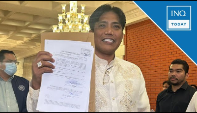
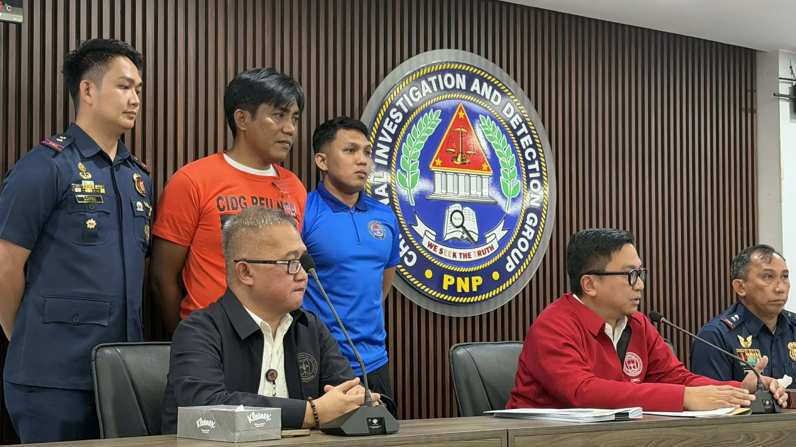

Norman Mangusin Case
Filipino vlogger and social media personality who rose to fame through his viral “Mayaman Challenge,” encouraging wealthy individuals to donate to the poor. His popularity brought him millions of followers, but also placed him at the center of controversy.
Over the years, Mangusin has faced multiple legal battles, including charges of estafa, illegal recruitment, traffic violations, and unauthorized use of police uniforms. He even attempted to run for the Senate in 2025, but was declared a nuisance candidate by the Commission on Elections. The Supreme Court later fined him for contempt after withdrawing his candidacy.
Despite these issues, Mangusin remains a polarizing figure in Philippine society—admired by some for his charitable initiatives, yet criticized for alleged deception and reckless behavior. His story highlights the tension between social media influence and accountability in real life.
About Norman
Norman Mangusin, also known by his alias Francis Leo Marcos, was born on November 29, 1979 in Baguio City, Philippines. He grew up in Luzon and later became widely recognized as a social media personality and philanthropist.
He gained popularity through his viral “Mayaman Challenge,” which encouraged wealthy individuals to donate to those in need. This campaign earned him millions of followers and positioned him as a figure of generosity in the online community.
Beyond his online fame, Mangusin is known for his outspoken personality, charitable initiatives, and controversial public life. His story reflects the influence of social media in shaping modern public figures in the Philippines.
Timeline
2024 — Arrest
Norman Mangusin was arrested on estafa and illegal recruitment charges. This marked the beginning of his highly publicized legal battle.
Read Article
2025 — Senate Campaign
Despite ongoing cases, Mangusin filed candidacy for the Senate elections, sparking debates about accountability and public trust.
Read Article
2026 — Media Coverage
His story continued to dominate headlines, raising awareness about online personalities, fraud, and political ambition in the Philippines.
Read Article